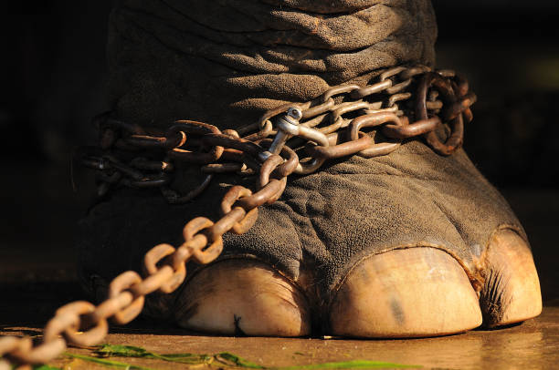

A list of Zoos to help boycott
- Cherokee Bear Zoo and Santa’s Land
Cherokee, North Carolina - Hovatter’s Wildlife Zoo
Kingwood, West Virginia - Dallas Zoo
Dallas, Texas - Los Angeles Zoo
Los Angeles, California - Oklahoma City Zoo
Oklahoma City, Oklahoma
